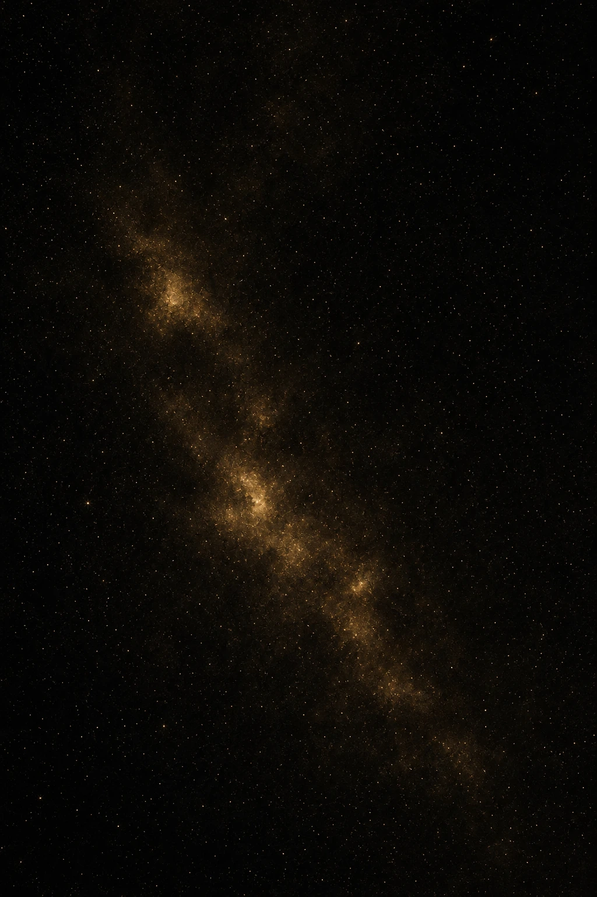

Chapter ZeroThere are experiences that make ordinary certainty feel too small. They do not prove every interpretation we attach to them. They do not excuse fantasy, arrogance, or escape. But they can remind us that human perception is limited, and that the edge of our current understanding is not the edge of reality itself.
Throughout history, human beings have mistaken the limits of their senses for the limits of the world. We could not see microbes, yet they were there. We could not hear radio waves, yet they moved through the air. We could not detect galaxies beyond the reach of early instruments, yet they existed before we learned how to observe them. Again and again, reality has proven larger than the tools we first used to measure it.
The Flatland analogy belongs here. A being confined to two dimensions may see only a circle when a larger object passes through its plane. The circle is not false. It is incomplete. The analogy does not prove hidden dimensions, shared visions, or extraordinary claims. It simply teaches caution. Limited perception should never become unlimited certainty.
Apotheosis does not ask anyone to abandon reason. It does not ask anyone to accept private experience as public proof. A powerful experience may change a life, but the moment it becomes a claim about reality itself, humility must govern the interpretation.
The honest response to mystery is not blind belief. It is not reflexive dismissal. It is disciplined curiosity: the willingness to ask what is known, what is inferred, what remains possible, and what remains unknown.
There is strength in saying, “I do not yet know.” That sentence protects wonder from fantasy and reason from arrogance. It keeps the mind open without letting it become careless.
The veil is not lifted by certainty. It is approached through humility. Growth begins when the need to possess an answer gives way to the courage to ask a better question.